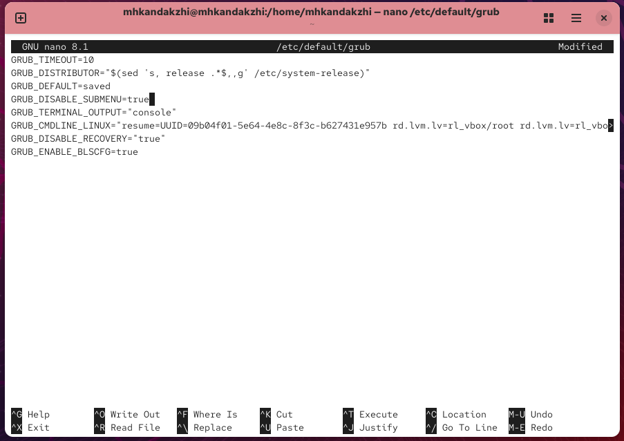
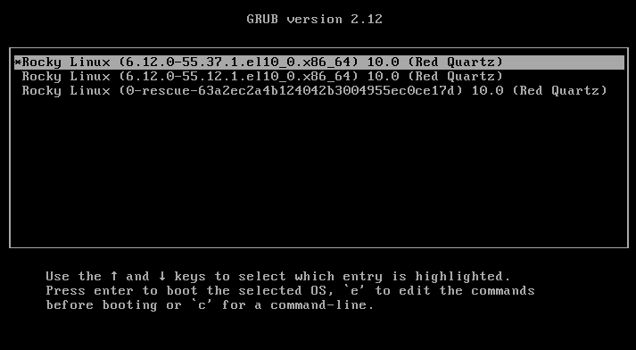
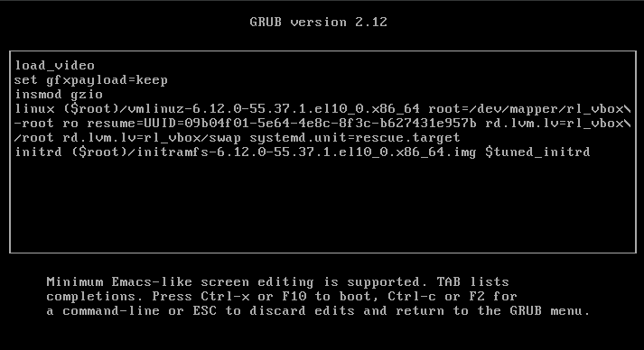
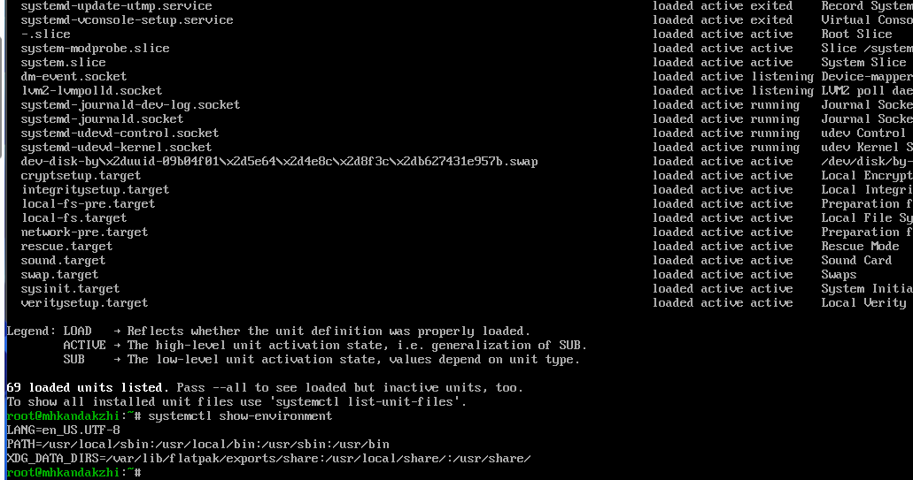
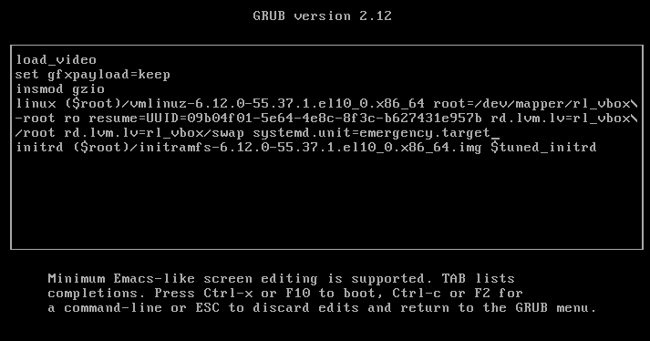
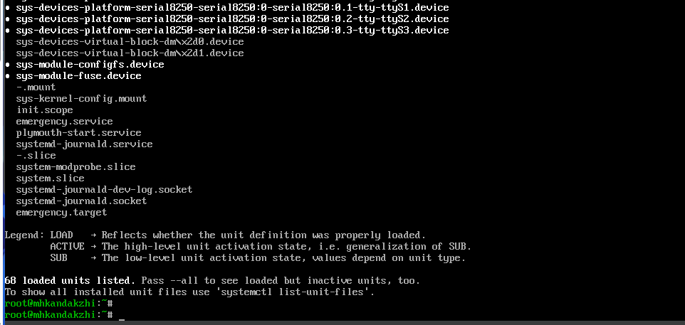
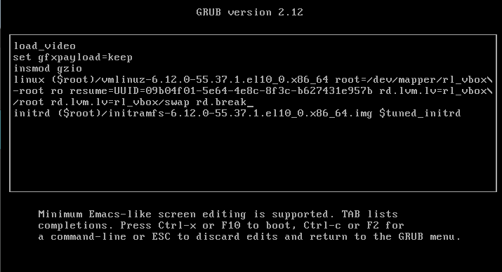
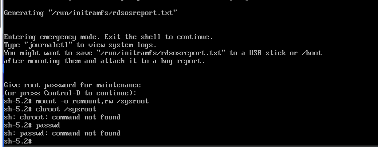

Получить навыки работы с загрузчиком системы GRUB2 в Linux.

Рис. 1 — Редактирование файла /etc/default/grub
-.
Рис. 2 — Создание новой конфигурации GRUB2

Рис. 3 — Меню загрузки GRUB
-.

Рис. 4 — Редактирование строки загрузки (rescue mode)
-.

Рис. 5 — Список активных юнитов в rescue mode
-.

Рис. 6 — Редактирование строки загрузки (emergency mode)
-.

Рис. 7 — Список юнитов в emergency mode
-.

Рис. 8 — Редактирование строки загрузки с параметром rd.break
Проверка работы системы.

Рис. 9 — Попытка сброса пароля root
В ходе работы были изучены основные приёмы настройки и модификации загрузчика GRUB2 в операционной системе Linux. Были рассмотрены процессы изменения параметров конфигурационного файла /etc/default/grub, генерации нового файла /boot/grub2/grub.cfg и проверка результатов при загрузке системы. Дополнительно были исследованы режимы rescue и emergency, а также порядок действий при сбросе пароля суперпользователя root.